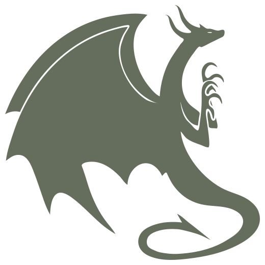
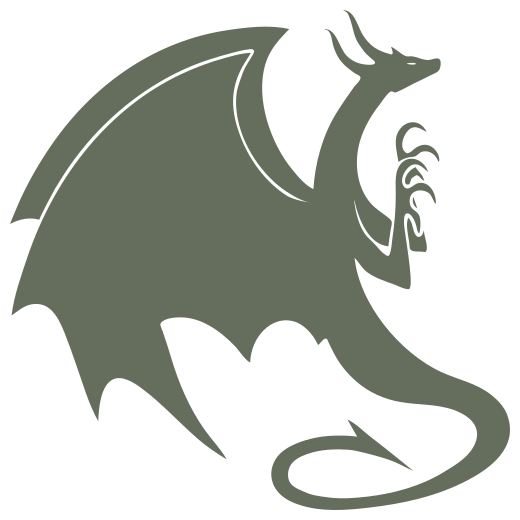
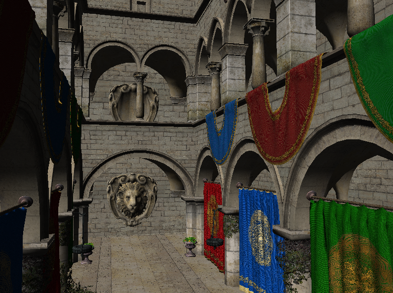
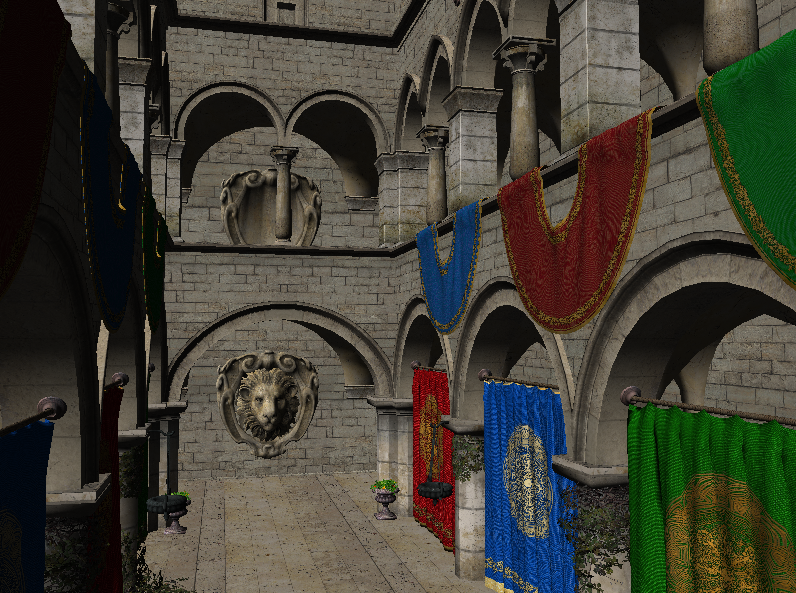

Venkataram Sivaram

Technical Skills
Languages
- Python
- C and C++
- CUDA
- Rust
- GLSL
- Slang
- Java
- Bash
- LaTeX
Libraries
- PyTorch
- Vulkan
- OpenGL
- TensorFlow
Systems
- Linux
- Windows
- QEMU/KVM
Miscellaneous
About
Hi there!
I am currently a third-year undergraduate student at the University of California, San Diego (UCSD), pursuing a Bachelor of Science in Computer Science with a minor in Mathematics. Since joining UCSD, I have been actively involved in Computer Graphics research at the Center for Visual Computing, where I have been fortunate to be advised by Professors Ravi Ramamoorthi and Tzu-Mao Li.
My primary research interests include:
I am currently a third-year undergraduate student at the University of California, San Diego (UCSD), pursuing a Bachelor of Science in Computer Science with a minor in Mathematics. Since joining UCSD, I have been actively involved in Computer Graphics research at the Center for Visual Computing, where I have been fortunate to be advised by Professors Ravi Ramamoorthi and Tzu-Mao Li.
My primary research interests include:
- Real-time, inverse, and differentiable rendering
- Languages and systems for graphics and heterogeneous computing
- Interactive simulation of natural phenomena
- Reinforcement learning and machine learning
- Computer vision systems for robotics
Awards
- CSE Undergraduate Student Research Award for Excellence in Research (UC San Diego, 2024)
- Honorable Mention, CRA Outstanding Undergraduate Researcher Award (CRA, 2024)
Research

Neural Geometry Fields for Meshes
Venkataram Sivaram, Ravi Ramamoorthi, and Tzu-Mao Li
SIGGRAPH North America 2024 (Conference Track)
Venkataram Sivaram, Ravi Ramamoorthi, and Tzu-Mao Li
SIGGRAPH North America 2024 (Conference Track)

Parameter-space ReSTIR for Differentiable and Inverse Rendering
Wesley Chang, Venkataram Sivaram, Derek Nowrouzezahrai, Toshiya Hachisuka, Ravi Ramamoorthi, and Tzu-Mao Li
SIGGRAPH North America 2023 (Conference Track)
Wesley Chang, Venkataram Sivaram, Derek Nowrouzezahrai, Toshiya Hachisuka, Ravi Ramamoorthi, and Tzu-Mao Li
SIGGRAPH North America 2023 (Conference Track)
Experience
Industry
I interned at NVIDIA in the summer of 2024 as a
3D Graphics Software Intern. Here, I worked on
the Slang project,
exploring innovative applications of shader
modules, dynamic shader linking, and link-time
specialization while collaborating with a
wonderful team led by
Brandon Mills.
Teaching
Undergraduate Tutor for Computer Graphics
CSE 167
(Fall 2024), UC San Diego.
Open Source Projects
Javelin
Just-in-time shader programming directly within C++ for Vulkan applications, using metaprogramming and operator overloading.

Just-in-time shader programming directly within C++ for Vulkan applications, using metaprogramming and operator overloading.
Kobra
Research-oriented rendering engine written in C++ and using Vulkan, with implementations for modern algorithms like ReSTIR.

Research-oriented rendering engine written in C++ and using Vulkan, with implementations for modern algorithms like ReSTIR.
Zhetapi
Machine learning and numerical analysis library written in C++ along with a Python-like scripting language to promote usability.

Machine learning and numerical analysis library written in C++ along with a Python-like scripting language to promote usability.

littlevk
Lightweight single-header C++20 wrapper for Vulkan to reduce boilerplate code in graphics applications.

Lightweight single-header C++20 wrapper for Vulkan to reduce boilerplate code in graphics applications.
